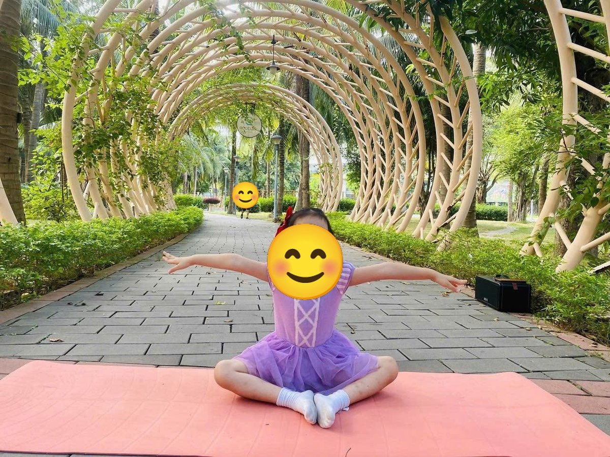

Chủ đề 22 · Cảm xúc của bé
Sư Tử Nhỏ học gọi tên cảm xúc
🌟 Bài học trong câu chuyện
Giới luật yoga: Svadhyaya – Hiểu bản thân mình. Bé biết mình đang vui, buồn hay mệt, và nói ra được.
Kỹ năng sống: Gọi tên cảm xúc, tự điều chỉnh khi giận.
1. Khởi động (2 phút)
Cả lớp ngồi xếp bằng thành vòng tròn. Cùng thở 3 hơi thở bông hoa: hít vào bằng mũi như ngửi hoa, thở ra bằng miệng thật chậm. Chắp tay trước ngực và chào nhau: “Namaste, chào các bạn!”
2. Câu chuyện: Sư Tử Nhỏ học gọi tên cảm xúc (đọc cho bé nghe, 4 phút)
Cô đọc trọn câu chuyện cho bé nghe trước. Sau đó cô kể lại từng đoạn ngắn và cả lớp cùng tập 10 tư thế ở phần bên dưới.
Ở khu rừng nọ có Sư Tử Nhỏ. Mỗi khi không vừa ý, Sư Tử Nhỏ lại gầm thật to: "Grào!". Các bạn sợ quá, chẳng ai dám chơi cùng. Sư Tử Nhỏ buồn lắm mà không hiểu vì sao.
Cô Hươu đến bên Sư Tử: "Cô dạy con một trò chơi nhé: gọi tên cảm xúc". Cô chỉ chú Cún đang vẫy đuôi tít mù: "Đó là vui". Cô chỉ bạn Rùa đang trốn vào mai: "Đó là sợ". Cô chỉ cây liễu rũ cành bên hồ: "Đó giống như khi mình buồn".
"Còn khi con muốn gầm, đó là giận", cô Hươu nói. "Lúc giận, con hãy hít vào thật sâu, rồi thở ra thật dài: khàaa, để cơn giận bay đi". Sư Tử thử ngay, thấy người dịu lại.
Cô dạy tiếp: khi dũng cảm, mình đứng vững như chiến binh. Khi cần bình tĩnh, mình ngồi như bông sen và thở chậm ba lần. Khi tự tin, mình tỏa sáng như ngôi sao. Khi hào hứng, mình muốn nhảy như ếch. Khi mệt, mình nghỉ như gấu ngủ đông.
Hôm sau, bạn Khỉ giành quả chuối của Sư Tử. Sư Tử thấy cơn giận nổi lên. Nhưng lần này, Sư Tử thở ra thật dài, rồi nói: "Mình đang giận. Bạn trả mình nhé". Khỉ xin lỗi. Sư Tử tự ôm lấy mình và mỉm cười. Từ đó, các bạn lại chơi cùng Sư Tử Nhỏ.
3. Kể lại và tập 10 tư thế (6 phút)
-
 1
1Vui: chó vẫy đuôi
🧘 Tư thế Chó úp mặt (Downward Dog)
Lời kể khi tập: Khi vui, Cún vẫy đuôi tít. "Mình đang vui!"
Cách làm: Chống hai tay và hai chân xuống thảm, nâng mông lên cao, người thành hình tam giác. Giữ 3 đến 5 nhịp thở.
-
 2
2Giận: sư tử gầm
🧘 Tư thế Sư tử thở (Lion's Breath)
Lời kể khi tập: Khi giận, Sư Tử muốn gầm. Cô dạy: thở ra thật dài "Khàaa" để cơn giận bay đi.
Cách làm: Quỳ gối, hai tay chống xuống thảm trước gối (hoặc đặt trên gối), hít vào bằng mũi, rồi há miệng thè lưỡi thở ra "khàaa" như sư tử. Giữ 3 đến 5 nhịp thở.
-
 3
3Sợ: rùa trốn vào mai
🧘 Tư thế Con rùa (Turtle)
Lời kể khi tập: Khi sợ, Rùa trốn vào mai. "Mình đang sợ, mình cần một cái ôm".
Cách làm: Ngồi, mở rộng hai gối, luồn tay dưới gối, cúi người như rùa trốn vào mai. Giữ 3 đến 5 nhịp thở.
-
 4
4Buồn: cây liễu rủ
🧘 Tư thế Gập người đứng (Forward Fold)
Lời kể khi tập: Khi buồn, người mình rũ xuống như cây liễu. "Mình buồn, mình muốn kể cho mẹ nghe".
Cách làm: Đứng, gối hơi chùng, cúi gập người, hai tay buông thả xuống sàn. Giữ 3 đến 5 nhịp thở.
-
 5
5Dũng cảm: chiến binh
🧘 Tư thế Chiến binh 2 (Warrior 2)
Lời kể khi tập: Khi dũng cảm, mình đứng vững như chiến binh.
Cách làm: Bước một chân dài ra trước, gập gối trước, chân sau duỗi thẳng, hai tay vươn cao (hoặc dang ngang), đứng vững như chiến binh. Giữ 3 đến 5 nhịp thở.
-
 6
6Bình tĩnh: hoa sen
🧘 Tư thế Hoa sen (Lotus)
Lời kể khi tập: Khi cần bình tĩnh, mình ngồi hoa sen, thở chậm ba lần.
Cách làm: Ngồi xếp bằng, lưng thẳng, hai tay đặt trên gối, ngón cái chạm ngón trỏ như búp sen, thở thật chậm. Giữ 3 đến 5 nhịp thở.
-
 7
7Tự tin: ngôi sao sáng
🧘 Tư thế Ngôi sao (Star)
Lời kể khi tập: Khi tự tin, mình tỏa sáng như ngôi sao.
Cách làm: Đứng dang rộng hai chân, hai tay dang ngang thật thẳng, cả người thành ngôi sao năm cánh. Giữ 3 đến 5 nhịp thở.
-
 8
8Hào hứng: ếch nhảy
🧘 Tư thế Con ếch (Frog)
Lời kể khi tập: Khi hào hứng, mình muốn nhảy như ếch! "Ộp ộp!"
Cách làm: Ngồi xổm, hai tay chạm sàn giữa hai chân, bật nhảy nhẹ và kêu "ộp ộp". Giữ 3 đến 5 nhịp thở.
-
 9
9Mệt: gấu ngủ đông
🧘 Tư thế Em bé (Child's Pose)
Lời kể khi tập: Khi mệt, mình nghỉ như gấu ngủ đông.
Cách làm: Quỳ gối, ngồi lên gót chân, cúi người cho trán chạm thảm, hai tay duỗi ra trước hoặc để xuôi bên người. Giữ 3 đến 5 nhịp thở.
-

10Yêu thương: tự ôm mình
🧘 Tư thế Tự ôm mình (Self Hug)
Lời kể khi tập: Sư Tử Nhỏ tự ôm mình: "Lúc giận, mình thở chậm". Các bạn lại chơi cùng Sư Tử.
Cách làm: Ngồi, dang rộng hai tay thật to rồi vòng ôm lấy vai mình, lắc lư nhẹ và nói "Mình thương mình". Giữ 3 đến 5 nhịp thở.
4. Thư giãn (2 phút)
Các con nằm ngửa, tay chân thả lỏng, nhắm mắt lại. Cô nói nhẹ: “Hít vào thật chậm… thở ra thật chậm… Con nhớ lại câu chuyện vừa rồi, nhớ người bạn mình thích nhất trong truyện. Cơ thể con mềm như bông, nhẹ như mây.” Sau đó các con nghiêng người, từ từ ngồi dậy.
5. Trò chuyện cùng bé (1 phút)
Sư Tử Nhỏ biết gọi tên cảm xúc và thở chậm khi giận. Hiểu chính mình là Svadhyaya.
Cô hỏi các con:
- Hôm nay con thấy vui, buồn hay giận?
- Khi giận, con có thể làm gì?
Kết thúc bằng lời chào “Namaste” và một nụ cười.
Lưu ý cho thầy cô và bố mẹ: Tập trên thảm, không tập ngay sau khi ăn no. Bé chỉ làm tới mức thấy dễ chịu, không ép bé. Tư thế đứng một chân có thể cho bé vịn tường hoặc vịn tay người lớn.